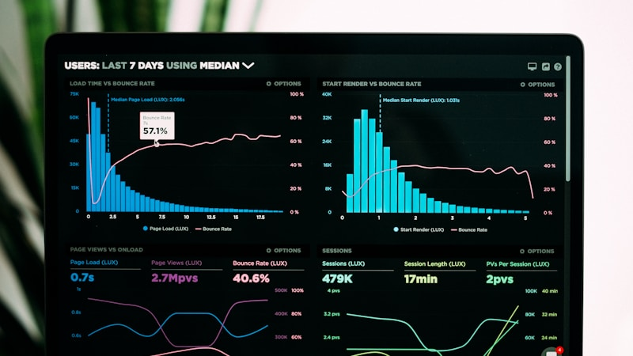

GA4, Google Tag Manager e analytics
Misura, analizza, ottimizza ogni touchpoint

Misurazione utile alle decisioni dell’impresa
Configuriamo Google Analytics 4, Google Tag Manager, eventi e dashboard per comprendere meglio richieste, campagne e vendite. Partiamo dalle domande del tuo team: quali contatti arrivano, quali azioni vengono completate e come confrontare i dati del sito con le operazioni effettive.
La misurazione digitale ha limiti: consenso, browser, dispositivi, piattaforme esterne e configurazione possono rendere i dati incompleti. Il lavoro consiste nel progettare una raccolta verificabile e nel documentare ciò che i report possono e non possono descrivere.
Analisi iniziale e piano degli eventi
Controlliamo gli strumenti presenti, gli account, i tag pubblicati, gli eventi e gli eventuali duplicati. Concordiamo una mappa delle azioni da misurare, con nomi, parametri, condizioni di attivazione e criteri di verifica. Un clic sul pulsante di un modulo non viene confuso con la conferma di una richiesta ricevuta.
- Richieste di contatto e preventivo: inizio, errori e conferma di invio quando tecnicamente disponibili.
- E-commerce: passaggi concordati del catalogo, carrello, checkout e acquisto, confrontati con il sistema ordini.
- Azioni intermedie: clic sul telefono, download o altre interazioni utili al progetto.
- Integrazioni: collegamenti con campagne, prenotazioni e gestionali, in base agli accessi e ai dati disponibili.
Implementazione GA4, GTM e data layer
Impostiamo proprietà, contenitore, eventi e parametri necessari al perimetro concordato. Quando serve, realizziamo con lo sviluppo un data layer che esponga segnali chiari dal sito. Verifichiamo gli eventi con percorsi di prova e controlli di duplicazione prima di pubblicare le modifiche.
Per un sito già operativo, valutiamo come intervenire sull’installazione esistente e preservare le informazioni utili. Le differenze fra report pubblicitari, analytics e dati aziendali vengono analizzate senza presumere che i rispettivi conteggi debbano coincidere.
Consenso e configurazioni tecniche
Colleghiamo, quando previsto, i tag alla piattaforma di gestione del consenso e verifichiamo il comportamento con le diverse scelte dell’utente. La configurazione tecnica deve essere coordinata con le indicazioni del titolare e con le verifiche privacy pertinenti al progetto.
Google Consent Mode, configurazioni server-side e API di conversione non sono strumenti per aggirare il rifiuto del consenso. Non rendono automaticamente completa l’attribuzione e non certificano da soli la conformità legale. Tipologia di dati, permessi e destinazioni vanno definiti prima dell’implementazione.
Dashboard, documentazione e affiancamento
Prepariamo report su misura con metriche, filtri e definizioni comprensibili. Distinguiamo dati osservati, eventuali stime delle piattaforme e informazioni provenienti dal gestionale. Questo aiuta il team a usare i numeri con i rispettivi limiti.
La consegna comprende la documentazione concordata: mappa degli eventi, account e accessi, configurazioni rilevanti e procedure di controllo dopo una modifica al sito. Possiamo affiancare chi leggerà i report e pianificare verifiche periodiche.
Come iniziare
Raccontaci quali decisioni vuoi prendere e quali strumenti utilizzi. Il team CatalisiLab, a Palermo, può valutare una nuova configurazione o una revisione dell’esistente, anche da remoto. Per un esempio pratico consulta la guida a GA4 e Google Tag Manager; per parlare del tuo caso contattaci.
Hai un progetto in mente?
Facciamolo partire.
Raccontaci la tua idea e troviamo insieme la soluzione migliore. Una call di 30 minuti per capire se possiamo esserti utili.